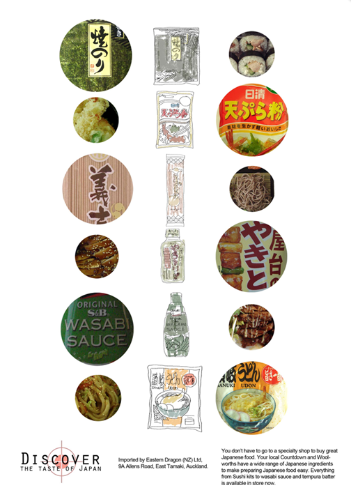
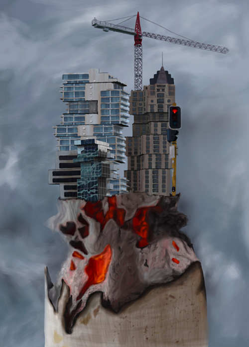
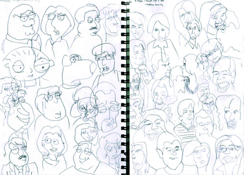

random videos and eat vari-
ous assortments of food. Oh,
you too? Let's be friends.
Dwerking
A collaboration with some talented Bboys. Choreographed on the day according to the environment. The rough idea of the story was to portray the nostalgic and childish side of our everyday lives - everything can be fun.
10cm - Music Video
A simple music video cover using the assets available to us at the time. Experimenting on smooth camera movement with a forklift and a tripod. It was pretty dangerous but well worth it.
The Next Episode
A one-shot live performance in collaboration with some awesome Bboys and my musical friend on the Cajon. Stripping down to the basics of dancing with a simple beat and letting your body carry you.
Stop Motion Stickies
An assignment during AUT 2010 where we create an advertisement using the technique of Stop Motion.
Dance
One of the first experimental dance videos a friend and I decided to do.
Journey
This is our video entry for "The Loop" Competition by Frontier in 2012. It had to be within 30 seconds, be able to loop and be able to be played and understood with no audio. It received Top 20 internationally.
Dancing In The Moonlight
A fun little experimental video with some of NZ's top Bboys. Always a fan of one-shot videos.
Battlecry 2013
A collaboration with TheBreaksNZ. Here is the recap video for one of the biggest events that is held every year in the Bboy community.
Best Ugly Bagels
Thank you to Best Ugly Bagels for letting my friend and I observe and film! My first attempt at a promotional video and wanted to start off at one of my favorite spots.
Habitat For Fitness
Filming for Habitat For Fitness otherwise known as Kingsland Crossfit, was an amazing experience. The team is super friendly, helpful and patient.
Reach Out 2014
A youth charity event held in the heart of Auckland to raise money and help cultivate creative arts. I had many roles within this event which included marketing, graphic designer and assistant to the organizer.
PB & J 2014
PB & J stands for People Boogie and Jam. It was a great event where people were able to chill with good music and good people. We hired a live band and it was one of the best decisions.
Southside Gig 2013
This day-long event showcases youth-focused, contemporary urban art forms in the genre of hip hop. There are a few different components to the day.
Miss Changy - Chinese New Year 2015
Thank you to Miss Changy for letting me film this awesome one of a kind event. It was one of the most memorable food nights I've had and I'm still drooling over it every time I watch this video. mm-MM!
Dumpling'd 2015
Had a great time filming this video during my trip and tried the best dumplings in Wellington (not even exaggerating). Definitely will visit Dumpling'd again during my next visit :D Give them a like on Facebook!
Piranha Jam 2016
Helped some friends film a recap video for their new Piranha concept. We decided on a VHS feel to fit the mood. Shot on my Lumix GH4.
Fists of Fury 2017
As a part of the dance community, I usually help my friends with some recap videos of the events that they put on as my contribution for support. Here is one of the biggest All Styles event Auckland - held at Neck of the Woods.
Work
This video was made for my final project in my Graphic Design degree in AUT during 2011. Dealing with the idea of Generation-Z taking the technology that we have for granted, and exaggerating the leverage that we have today.
The Green Dot
As an exercise during my year at Media Design School-we got given a default green dot animation to turn into 4 different things. I thought this theme was highly appropriate.. along with the sound effects made entirely by my friend and I - with our mouths.
Together-Kina Grannis MV
For our final project of our course in Media Design - we had to make a Music Video. Luckily I got permission from Kina Grannis who gave it a thumbs up and I was good to go. Judging from my projects during University where we had freedom to do anything, I think it's safe to say that I love the style of real video crossed with animation.
100 Days Project 2014
My first time participating in one of Auckland's creative events where you consecutively produce anything everyday for 100 days. I chose to do a 5 second animation everyday - using this opportunity for exploration. Part 1 video only shows the motion/idea side of things while the rest of the footage in Part 2 delved into possible Music Videos.
Ingram Micro-Microsoft Animation
A simple animation I did for my freelance job with Motion Sickness Studio for Microsoft.
Tv Titles Student Ad 2012
One of the many assignments we received during Media Design School where we make up a TV show and create the titles for it. Being the food lover I am, I created a food show where 3 famous foodies travel the world seeking the most authentic food.
Miss Changy Intro
Did a simple collab animation with Miss Changy for her Chinese New Year themed pop-up eatery. She supplied all the graphics and I made it move.
Pics Pay It Forward Campaign
Finally got to do a food based animation! Love everything related to food so I really enjoyed this project. Thanks to Motion Sickness Studio for the work and to Luke Toth for the guidance and style!
Preno - Animation
Here's a short animation I did for Preno via Motion Sickness Studio. A little how-it-works video which I always enjoy doing especially when it's something I would use too!
Soak - Intro Animation
A little intro animation I did for a fellow designer Catherine Tsang. Always loved the idea from the Mr.Cube animation and it's nice to do some manual pen tool animation from time to time.
The Social Club - Animation
Another animation for Motion Sickness Studio. This one is for The Social Club. Made for one of their events where a looped video was needed.
Work


Part of my final exhibition in AUT that involved the idea of Generation-Z becoming overwhelmed with technology. Please refer to "Work" video.
Reach Out

A youth charity event held in the heart of Auckland to raise money and help cultivate creative arts. I had many roles within this event which included marketing, graphic design and assistant to the organizer.
Christmas Cards

Gingerbread house made out of Eastern Dragon products
Eastern Dragon Experimental Ad
A prototype of a possible advert for a food magazine for Eastern Dragon products.
Digital Illustration 2011
A final project for my Digital Illustration paper during my last year of AUT.
Blind Drawings 2011
A page from my doodle journal during my last year of AUT. This is a piece where I did somewhat blind drawings of characters while I was watching TV shows.
nicole@deskofnc.com
Auckland University of Technology
Bachelors of Design -
Majoring in Graphic Design
Media Design School
Diploma of Visual Effects and
Motion Graphics